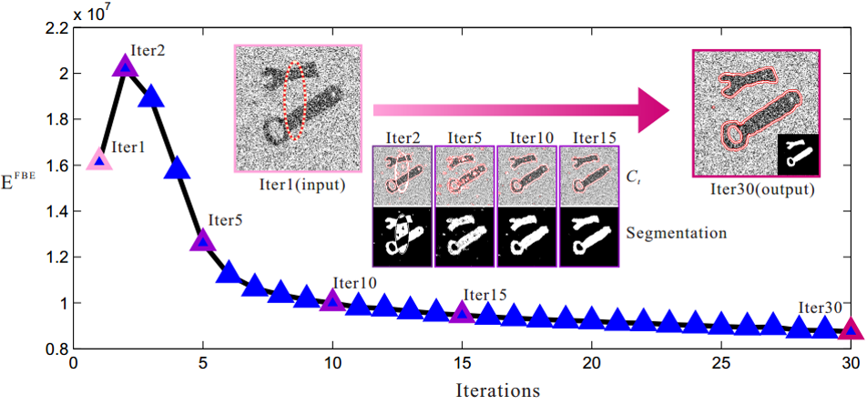
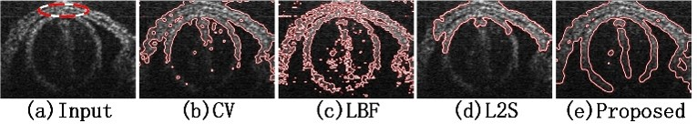

Frequency-tuned Active Contour Model for Biomedical Image Segmentation
1,2Qing Guo* 2Shuifa Sun* 2Fangmin Dong 1Wei Feng 3Bruce Zhi Gao 3Siyu Ma
1Tianjin University 2China Three Gorges University 3Clemson University

Figure 1: An example of minimizing FBE. As FBE reducing, the energy of C in subregions gradually vanishes. Finally, Ct is restricted to C with segmentation result obtained.
Abstract
Biomedical images are usually corrupted by strong noise and intensity inhomogeneity simultaneously. Existing regionbased active contour models (RACMs) easily fail when segmenting such images. In the frequency domain, we propose a generalized RACM that presents a new way to understand the essence of classical RACMs whose segmentation results are determined by a frequency filter to extract the proposed frequency boundary energy. Then, we introduce the difference of Gaussians as the optimal filter to exclude strong noise and intensity inhomogeneity effectively. We show superior performance of the model by comparing with six state-of-the-art methods on challenge biomedical images and segmenting an optical coherence tomography image sequence.

Figure 2:Segmenting optical coherence tomography (OCT) image with CV, LBF, legendre level set (L2S) and our method. The dashed line in (a) is the initial contour for all methods.
Introduction
In this paper, we propose a generalized RACM by defining frequency boundary energy (FBE) in the frequency domain. Image segmentation is defined as finding a contour that minimizes the FBE outside and inside the contour. Thus, the segmentation result is decided by a frequency filter that produces FBE. Then, we introduce two frequency filters being demonstrated to be classical RACMs, which indicates that FBE is a generalized RACM. Finally, we propose to use difference of Gaussians as a better filter to exclude strong noise and intensity inhomogeneity effectively. Extensive experiments demonstrate the proposed model achieves better results than six state-of-the-art methods.
Selective Segmentation
By setting different bandwidth and position for DoG filter, we show that DoG based FBE model is able to realize selective segmentation, that is, to segment different part in the same image.
Controllable Smoothness
We also show that our method is able to control the smoothness of contour by setting the degree to suppress high frequency information.
Segmenting texture images without texture features
We also perform an interesting experiment. With DoG filter, we can segment texture images without extracting texture feature and realize good result on some natural images.
Source Code
Source Code (Matlab) and Models: [ Demo ]Citation - BibTeX
Frequency-tuned Active Contour Model for Biomedical Image Segmentation
Qing Guo, Shuifa Sun, Fangmin Dong, Wei Feng, Siy Ma, Bruce Z. Gao. Freqeuncy-tuned Active Contour Model for Biomedical image segmentation.
In ICASSP 2017.(CCF-B, Oral).
[ PDF ]
[ PPT ]
[ BibTeX ]